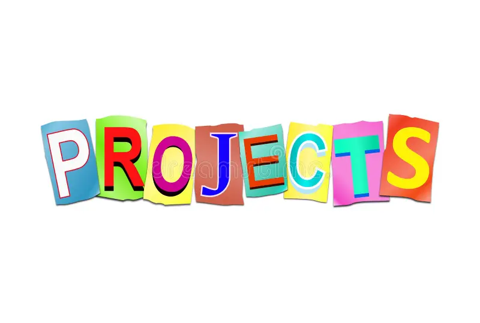

Python Bank Management System
- Developed a Bank Management System using Core Python to handle banking operations efficiently.
- Tools Used: MySQL Workbench, PyCharm
- Tech Stack: MySQL Connector, Conditional Statements, Exception Handling
- Implemented features like account creation, deposits, withdrawals, and balance inquiries with secure database connectivity.
SQL Project: Employee Management System
- Designed and managed an Employee Management System using SQL, handling employee records effectively.
- Tools Used: MySQL Workbench
- Tech Stack: Joins, Clauses, Subqueries, Correlated Subqueries
- Created and inserted 50+ records into four tables and wrote complex queries for data retrieval and analysis.
Machine Learning: Telecom Churn Prediction
- Built a Telecom Churn Prediction Model to identify customer churn trends using machine learning techniques.
- Tools Used: Jupyter Notebook
- Tech Stack: K-Nearest Neighbors (KNN), Random Cut Forest Algorithms, Data Preprocessing
- Processed large datasets, performed feature selection, and optimized model accuracy using various ML techniques.
HTML & CSS: Personal Portfolio Website
- Developed a Personal Portfolio Website to showcase projects, skills, and achievements with a responsive design.
- Tools Used: VS Code
- Tech Stack: HTML5, CSS3, Flexbox, Media Queries
- Designed an interactive UI with smooth navigation, animations, and a professional layout for better user experience.
Power BI: Sales Analysis Dashboard
- Created a Sales Analysis Dashboard in Power BI to visualize and track business performance metrics.
- Tools Used: Power BI, Excel (for data import and transformation)
- Tech Stack: DAX, Data Modeling, Visualization Techniques
- Integrated data from Excel, performed data cleansing, and built interactive reports to derive insights.